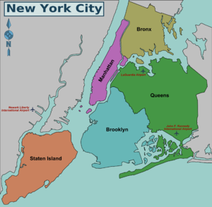
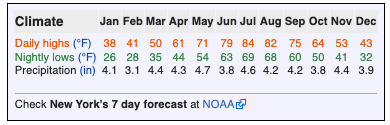
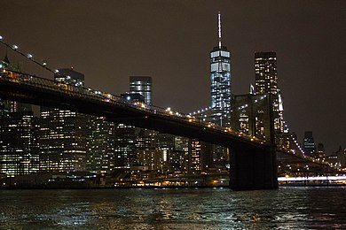
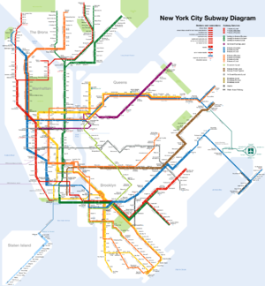

NYC
New York City consists of five boroughs, which are five separate counties. Each borough has a unique culture and could be a large city in its own right. Within each borough individual neighborhoods, some several square miles in size, and others only a few blocks in size, have personalities lauded in music and film. Where you live, work, and play in New York says something to New Yorkers about who you are. The five New York boroughs are: New York City District Map.png Manhattan (New York County) The famous island between the Hudson and East Rivers, with many diverse and unique neighborhoods. Manhattan is home to the Empire State Building in Midtown, Central Park, Times Square, Wall Street, Harlem, and the trendy neighborhoods of Greenwich Village and SoHo. Brooklyn (Kings County) The most populous borough, and formerly a separate city. Located south and east of Manhattan across the East River.
Known for the Brooklyn Botanic Garden, Prospect Park, The Brooklyn Museum, The New York Aquarium and a key NYC landmark Coney Island. Queens (Queens County) Located to the east of Manhattan, across the East River, and north, east, and south of Brooklyn. With over 170 languages spoken, Queens is the most ethnically diverse region in the United States, and one of the most diverse in the world. The Bronx (Bronx County) Located north of Manhattan Island, the Bronx is home to the Bronx Zoo, the New York Botanical Gardens, and the New York Yankees professional baseball team. Staten Island (Richmond County) A large island in New York Harbor, south of Manhattan and just across the narrow Kill Van Kull from New Jersey. Unlike the rest of New York City, Staten Island has a suburban character. It is known as the borough of parks. It has its own baseball team, several malls, and a zoo.
Climate
New York City has a humid subtropical climate, experiencing all four seasons and with about 50 inches (1,200mm) of rainfall evenly distributed throughout the year. Depending on the time of the year you visit it would be optimal to know what kind of weather you should expect. Winter: Winters in NYC are chilly and damp. However due to the moderating effect of the ocean and the urban heat island, the city does have warmer temperatures when compared to other cities on the same latitude like Pittsburgh, Columbus or Indianapolis. Nighttime lows usually hover around freezing and daytime highs are usually between the low 40s and the mid 50s (5C-15C). How cold or how warm it gets though depends greatly upon the location you're at in the city: the northern and western parts of the metropolitan area (like The Bronx, Yonkers and Newark) are usually colder during the night while the southern - southeastern areas such as Staten Island and Long Island may have milder temperatures. Sometimes the mercury may dip down to the teens (around -10C) but prolonged cold periods are very rare. New York is the second snowiest city out of the big 5 in the northeast, being 17 inches behind Boston but 5 inches in front of Philadelphia. The first snowfall of the year usually happens around early or mid-December and the last one in late February or early March. The city is prone to big snowstorms that can produce up to 1-2 feet of snow. While such events can create a winter wonderland keep in mind that they can also cause big traffic bottlenecks especially on highways.
The weather is generally mild with the ocean keeping the weather from being unbearably hot. Daytime highs are usually between the low 70s and the high 80s (20C-30C) and nighttime lows hover around 60F (16C). The city can experience heatwaves though that can make days particularly hot especially in places like Manhattan and inland areas like Newark, Patterson and the Yonkers which may become quite repulsive when the daytime high hits the 90s (30C and above). In stark contrast, coastal areas south of Long Island and Staten Island benefit significantly from the sea breeze that keeps temperatures much cooler even if Manhattan is sweltering. Prolonged hot periods are quite rare though. Rainfall is also a distinctive feature of the summer months as most of it falls between June and September and when it happens the weather may turn a bit chilly. Spring - Autumn: Spring and Autumn are generally identican when it comes the climate and are generally considered some of the best times to visit the city with generally mild temperatures. Keep in mind however that the weather in March and November may be quite similar to that of winter and the city does usually see at least one light snowfall every year during those months. Nor-easters are also more prevelant during Spring than Autumn, while during Autumn the changed color of the leaves is in full sight, especially in large, green areas like Central Park.
New Yorkers
The diverse population runs the gamut from some of America's wealthiest celebrities and socialites to homeless people. There are millions of immigrants living in the city. New York's population has been diverse since the city's founding by the Dutch. Successive waves of immigration from virtually every nation in the world make New York a giant social experiment in cross-cultural harmony. The city's ethnic heritage illuminates different neighborhoods throughout the five boroughs. Manhattan's Chinatown remains a vibrant center of New York City's Chinese community, though in recent years the very large Chinese community in Flushing, Queens, has rivaled if not eclipsed it in importance, and three other Chinatowns have formed in New York City: the Brooklyn Chinatown in Sunset Park; the Elmhurst Chinatown in Queens; and the Avenue U Chinatown located in the Homecrest section of Brooklyn. Traces of the Lower East Side's once-thriving Jewish community still exist amid the newly-gentrified neighborhood's trendy restaurants and bars, but there are Chassidic communities in Borough Park, Crown Heights and Williamsburg, Brooklyn. Harlem has been gentrifying and diversifying and remains a center of African-American culture in New York. East (Spanish) Harlem still justifies its reputation as a large Hispanic neighborhood. Little known to most tourists are the large Dominican neighborhoods of Hamilton Heights and Washington Heights in upper Manhattan.
Pizza and ethnic foods are available everywhere. An important change has been taking place in the population recently. During the last 2 decades and especially since 2003, large numbers of young people, many of them recent college graduates and professionals from the rest of the USA have moved to New York City, mostly to Brooklyn, Manhattan, and the parts of Queens closest to Manhattan. They have changed things considerably and continue to add to New York's vitality and artistic output. They have completely changed their neighborhoods in Brooklyn and Manhattan, such as Williamsburg, Brooklyn and Lower East side, Manhattan. One important thing to note about New York City, is its never-ending change, new stores, businesses, buildings and even skyscrapers replace the previous structures, there is always new construction. Photographs of the same busy street 10 or 20 years ago are unrecognizable today.
MTA System
Despite a (somewhat deserved) reputation for being dirty, the subway, which operates 24/7, is the fastest and best way to travel around the city. Fares are $2.75 (unless you use Single Ride MetroCard, which is $3.00), regardless of distance traveled. The much-feared subway crimes of the 1970s and 1980s are for the most part a thing of the past, and it is almost always completely safe. Just remember to use common sense when traveling late at night alone. Try to use heavily-traveled stations, remain visible to other people, and don't display items of value publicly. While violent crime is rare, petty crime - especially theft of iPhones and other expensive electronics - is more frequent, so be aware when using your phone on the train. Also, beware that hundreds of people have been arrested for putting their feet on a Subway seat or sitting improperly on a subway seat. Seven years ago, rule 1050(7)(J) of the city’s transit code criminalized what was once simply selfish behavior, such as standing too close to the doors. About 1,600 people were arrested in 2011 and had to wait long periods before seeing a judge and being sentenced.
New York has, as you might expect of the Big Apple, all the eating options covered and you can find almost every type of food available and every cuisine of the world represented. There are tens of thousands of restaurants to suit all tastes and budgets, ranging from dingy $0.99-a-slice pizza joints to $500-a-plate prix fixe sushi and exclusive Michelin-starred eateries. Thousands of delis, bodegas, and grocery stores dot every corner of the city and DIY meals are easy and cheap to find. Street food comes in various tastes, ranging from the ubiquitous New York hot dog vendors to the many carts with Middle Eastern cuisine on street corners in mid-town. However in Midtown be wary of restaurants and bars both immediately on and around Times Square, within the Theater District or near the Empire State Building - many are tourist traps cashing in on travelers' gullibility and lack of local knowledge.